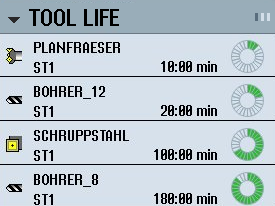

The widget displays the tool monitoring in relation to the following values:
Operating time of tool (standard time monitoring)
Finished workpieces (quantity monitoring)
Tool wear (wear monitoring)
| Note |
Multiple cutting edgesIf a tool has multiple cutting edges, the values of the edge with the lowest residual service life, quantity and wear is displayed. |
It possible to alternate between views by scrolling horizontally.
